This project consists of three apps that work in conjunction:
- Server app that runs on a PC and controls the experience.
- Client phone app installed on all phones that receives signal from the server and plays the appropriate video.
- Remote phone app that connects to the server and can be used to control the server (to trigger video playback remotely).
The videos to be played can easily be updated without the need to rebuild the app. The server loads a configuration file that's editable to provide a lot of flexibility.
The system offers three modes of operation which are configured per video:
- External audio - mutes the audio playback of the phones and plays an external audio via OSC command to a sound system.
- Ambisonic mode - pays ambisonic sound files with the videos through headphones connected to the Pixel phones.
- Internal audio - plays the videos with their built in stereo audio via headphones.
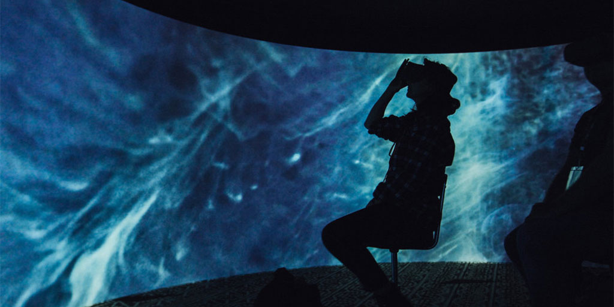
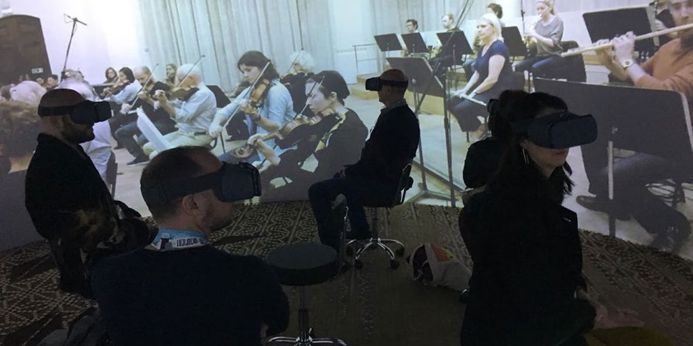
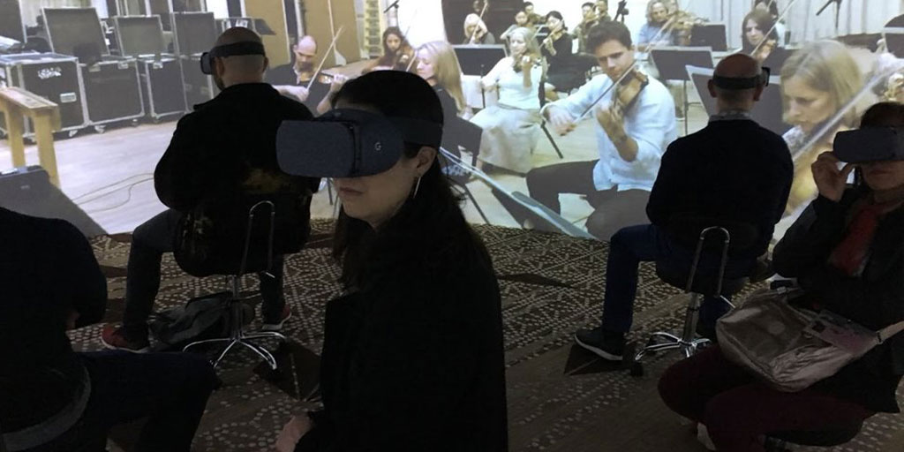
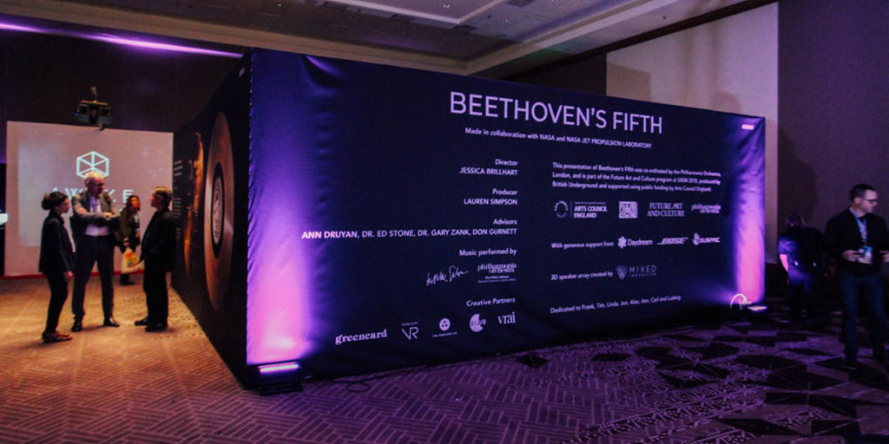
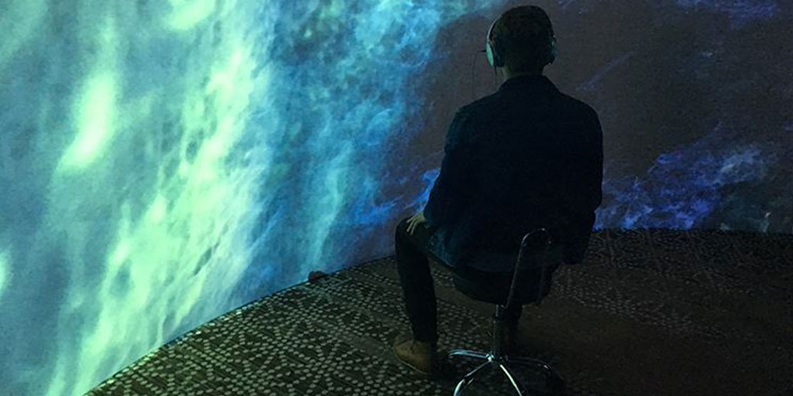
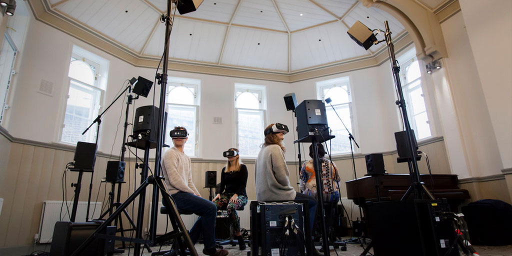
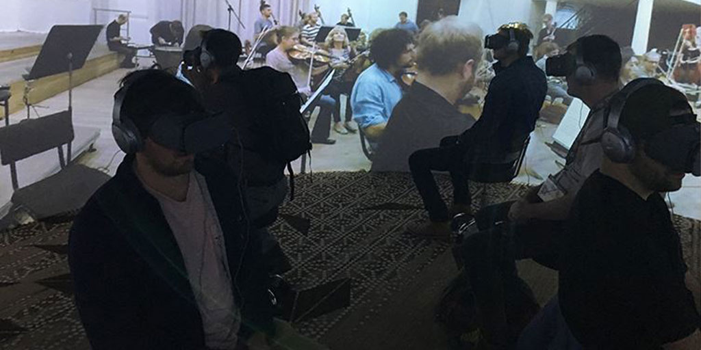
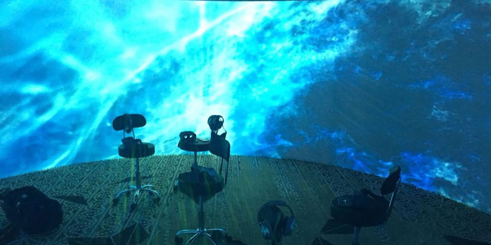
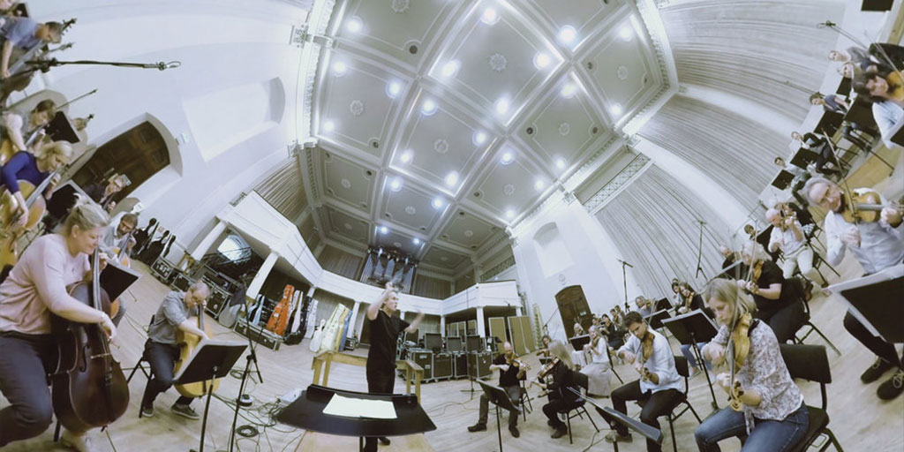
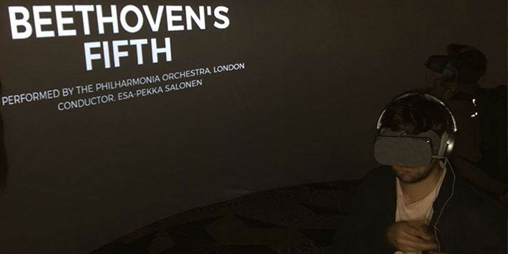
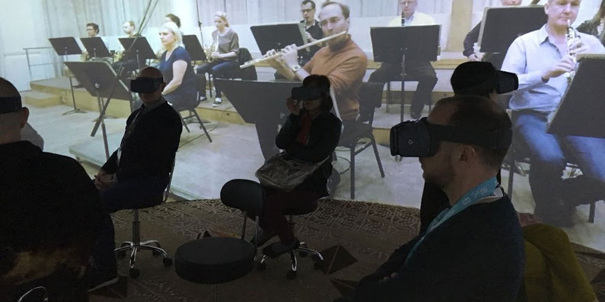
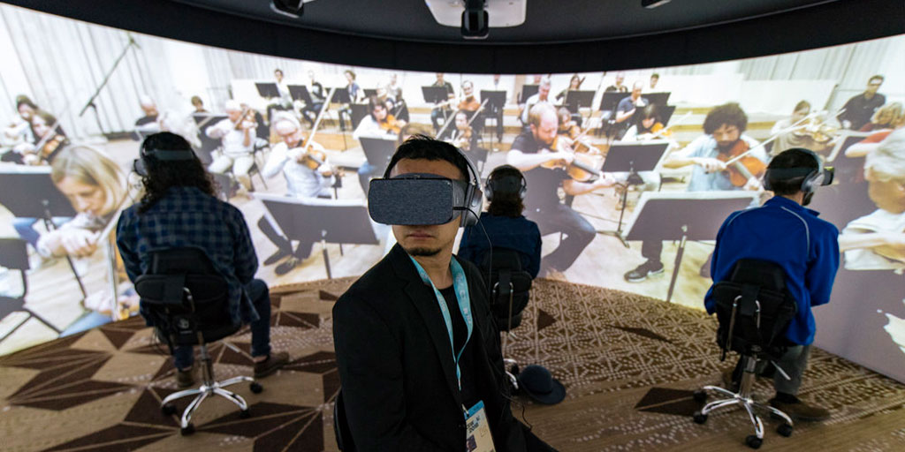
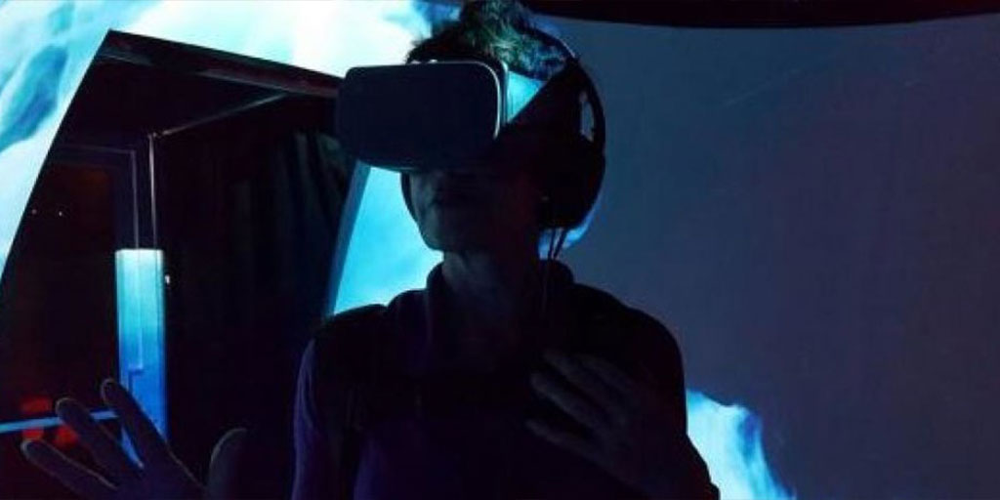
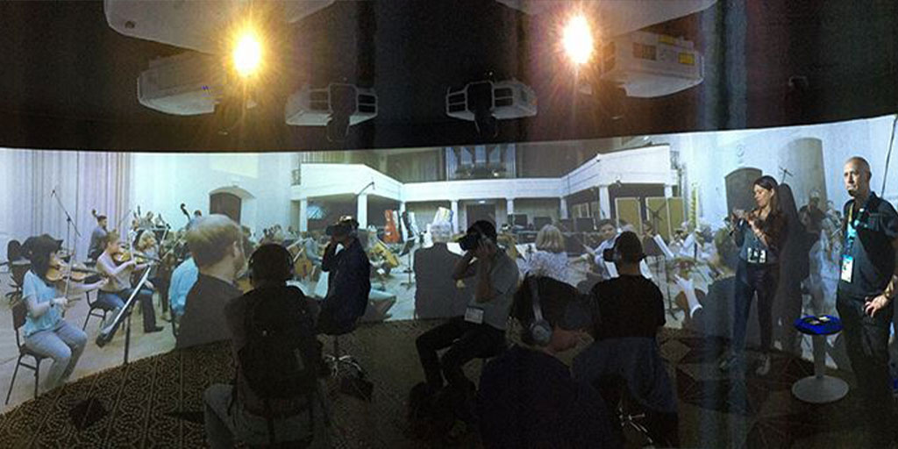
A later modification of the player allowed Lenovo Mirage Solo support for further exhibitions.
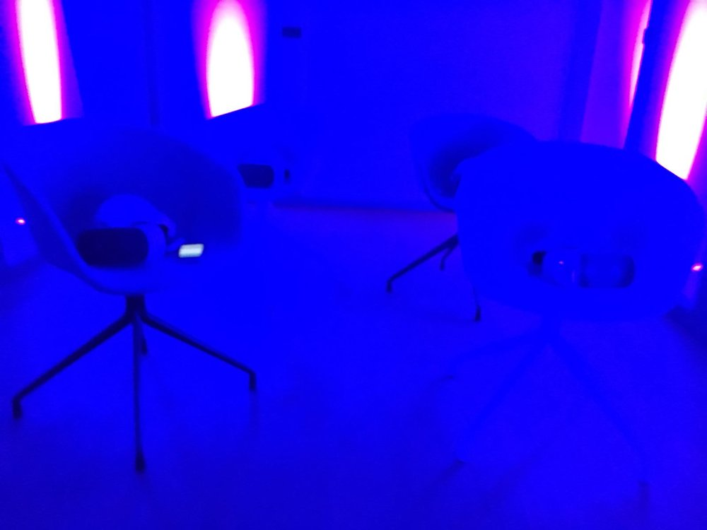
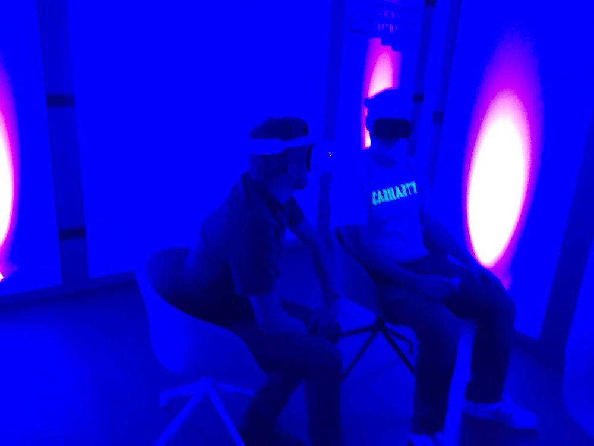
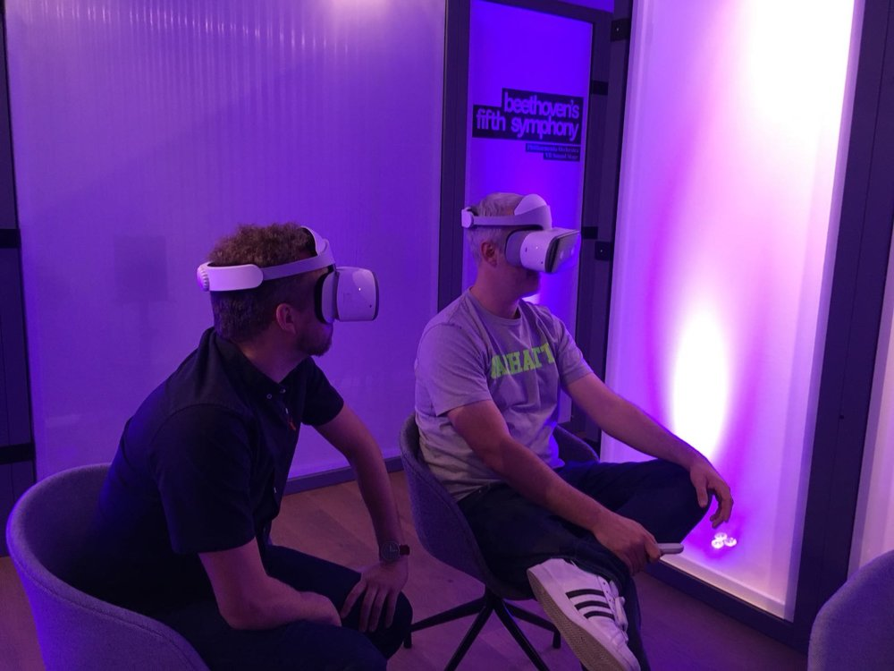
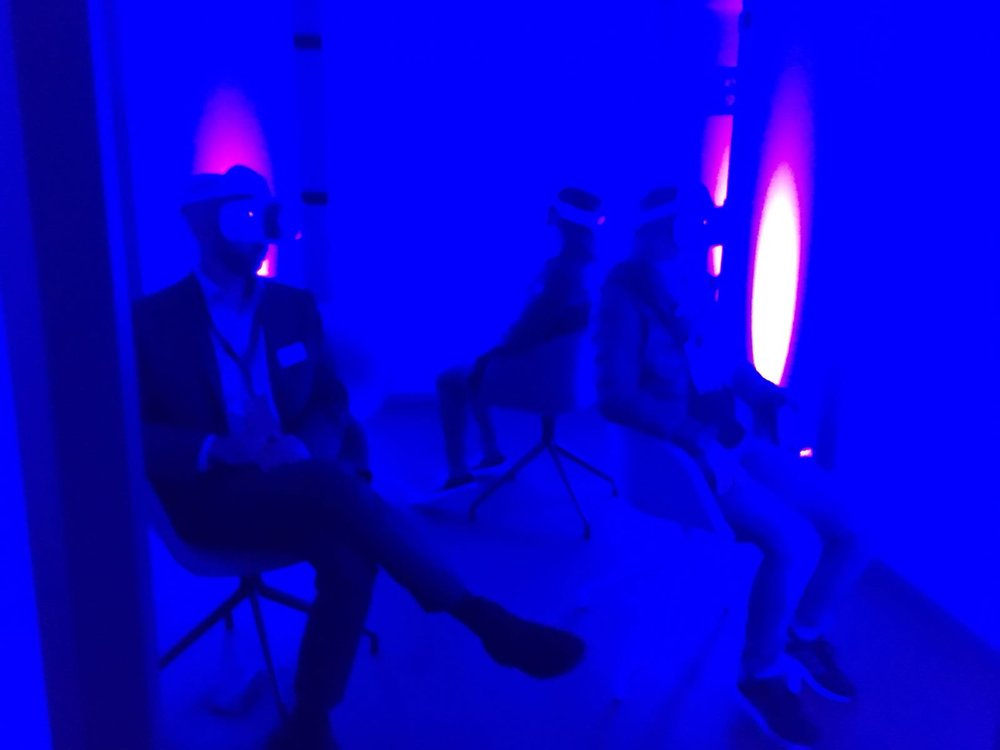
This player was also demonstrated to Prince William, Duke of Cambridge: